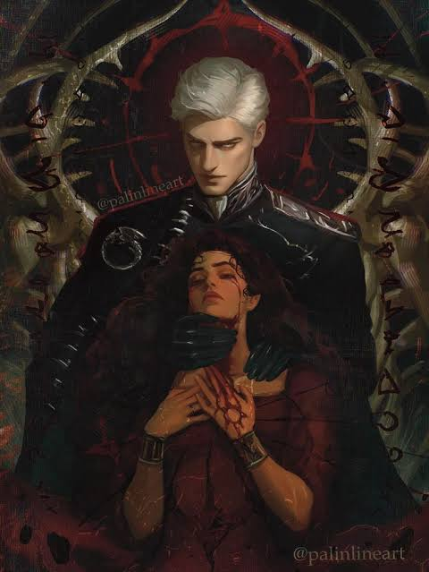
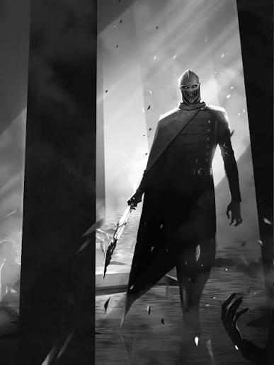
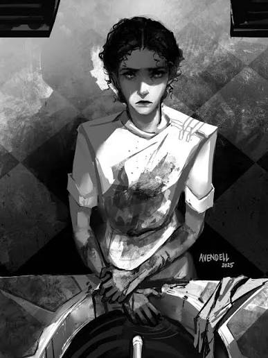
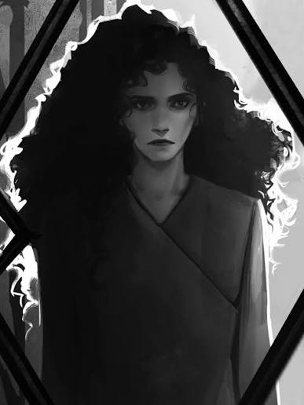
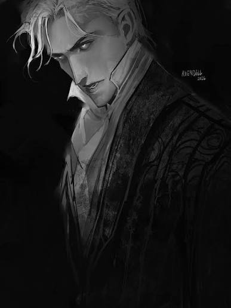

A NOVEL BY SENLINYU
ALCHEMISED
A world remade by war. A past that refuses to stay buried.
ENTER THE RECORD ↓FILE I · THE WORLD
A world built on ruin.
In Alchemised, the old order has fallen. War has left its mark on the world and on the people forced to survive it. Alchemy, power, memory, and the cost of what remains are woven through a story where the past is never safely behind anyone.
This is a story shaped by aftermath: what violence leaves behind, what people become under its pressure, and what can still be recovered when almost everything has been taken.
A record of a world that does not offer easy answers.

FILE II · THE CONFLICT
The war does not end
when the fighting stops.
The conflict in Alchemised is more than a battle for territory. It changes who holds power, whose lives are considered expendable, and what survival demands from the people caught inside it.
Its horror is intimate as well as political: ruined lives, the threat of cruelty backed by authority, and the uncertainty of what has been lost, altered, or deliberately concealed. The aftermath becomes another kind of battlefield.
The damage is not measured only in what burns.
FILE III · THE ALCHEMIST
Helena Marino
MEMORY · SURVIVAL · ALCHEMY
Helena is an alchemist whose knowledge makes her valuable in a world where power is never neutral. She is also a survivor, forced to face the consequences of a war that has reached into every part of her life.
Her story asks what remains of a person when their choices are narrowed by force, when memory becomes uncertain, and when the truth of the past is as dangerous as the people who want to control it.



FILE IV · THE HIGH REEVE
Kaine — the High Reeve
AUTHORITY · FEAR · CONTROL
The title of High Reeve carries the weight of a system built on domination. Kaine's presence is controlled and severe; the danger around him lies not only in what he can do, but in the power that allows his decisions to shape other people's lives.
The mask turns him into something difficult to read and harder to approach. It hides a face, but it also becomes a warning: here is a figure associated with fear, obedience, and the brutal machinery of the world that emerged from the war.
The most frightening power is the kind that expects no resistance.
END OF RECORD
Some histories are written by the victors.
Others survive in the people they failed to erase.